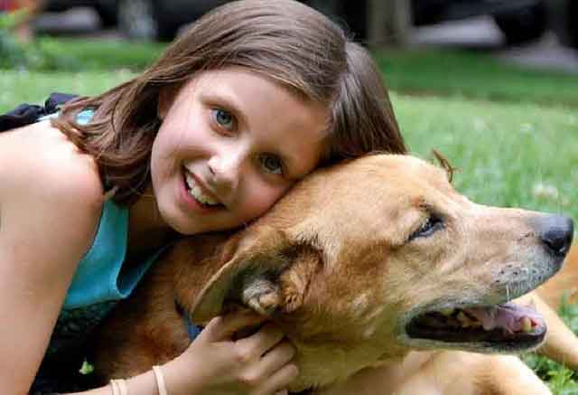

강아지도 우울증에 걸릴까요?
반려견을 키우다 보면 궁금한 것들이 한둘이 아니죠. 무슨 생각을 하는지, 어떤 말을 하고 싶은 건지, 좋아하는 건 뭔지 등 여러 가지가 궁금할 것입니다. 좋아한다면 더할 나위 없이 좋겠지만, 그렇지 않다면 걱정이 될 수밖에 없을 텐데요. 반려견과 관련된 다양한 궁금증! 그중에서도 강아지도 우울증에 걸리는지 궁금하신 분들도 있을 것입니다. 강아지, 우울증에 걸릴 수 있을까요?
"네! 반려견도 우울증에 걸릴 수 있습니다!"
예민하고 감정이 풍부한 사람은 우울증에 걸리기 쉽습니다. 마찬가지로 강아지도 우울증에 걸리곤 합니다. 사람처럼 기력이 없고 음식이 앞에 있어도 큰 관심을 보이지 않습니다. 또한, 반려견의 전반적인 건강 상태도 악화할 수 있습니다. 무엇보다 우울증은 면역력을 떨어뜨려 단순히 몸만 아픈 것이 아닌 각종 합병증부터 질병을 불러올 수 있습니다.
"우울증에 걸리는 원인은 뭘까요?"
사람과 비슷하다고 생각하면 될 것 같은데요. 사람이 사회적 동물인 것과 같이 강아지도 주변 동물과 사람에게 의지를 많이 하는 동물입니다. 그래서 혼자 있는 시간이 길어지거나 안정적인 환경을 받지 못하면 우울증이 찾아올 수 있습니다.
또한, 보호자가 우울한 모습을 보이면 반려견 역시 우울증에 걸리기 쉽습니다. 동물과 사람은 독립적인 존재가 아닌 서로가 말은 하지 못하지만, 교감은 할 수 있습니다. 서로 믿고 의지하는 것이죠. 믿고 의지하는 사람이 우울한 마음을 갖고 있다면 당연히 반려견 역시 영향을 받을 것입니다.
"우울증, 어떤 증상을 보이나요?"
1) 모든 일에 무관심해지고 장난감이나 간식에도 흥미를 느끼지 못합니다. 마치 무기력증에 빠진 것과 같은 모습입니다.
2) 잠을 자는 시간이 늘어나고 그렇게 좋아하던 산책 역시 거부합니다.
3) 식욕이 줄고 체중도 줄어들게 되면서 건강을 점점 잃어갑니다.
4) 신체 부위를 깨물거나 핥는 행위가 점차 늘어납니다.
"반려견 우울증 예방법이 있을까요?"
기본적으로 가족과 함께 있는 시간을 늘려줘야 합니다. 과거에는 우울증이 단순히 감정의 문제로만 여겨졌지만, 지금은 정신적인 문제이자 약물로서 치료할 수 있는 부분이라고 봅니다. 따라서 증상이 심각하다면 약물로서 치료할 수 있지만, 그 전에 가족과 함께하는 시간을 늘리고 행동학적 치료를 늘려가는 것이 좋습니다. 또한, 사회화가 제대로 발달하지 못했다면 늦었다 하더라도 사회화 발달을 위해 노력해야 합니다.
사람도 혼자 있는 시간과 사람들과 어울리는 시간이 각각 독립적으로 필요합니다. 마찬가지로 반려견에게도 혼자만 쉴 수 있는 공간이 필요하면서 동시에 가족들과 함께 어울리는 시간도 많아져야 합니다. 이러한 과정은 어려서부터 형성되어야 하며, 성견이 되어서는 사회에 부적응한 모습을 보일 수 있습니다. 따라서 반려견을 입양했다면, 입양한 순간부터 책임감 있는 모습으로 신체적, 심리적인 부분까지도 책임질 수 있어야 합니다.
[출처] 강아지도 우울증에 걸릴까요? ｜ 작성자 쭈딩쭈딩